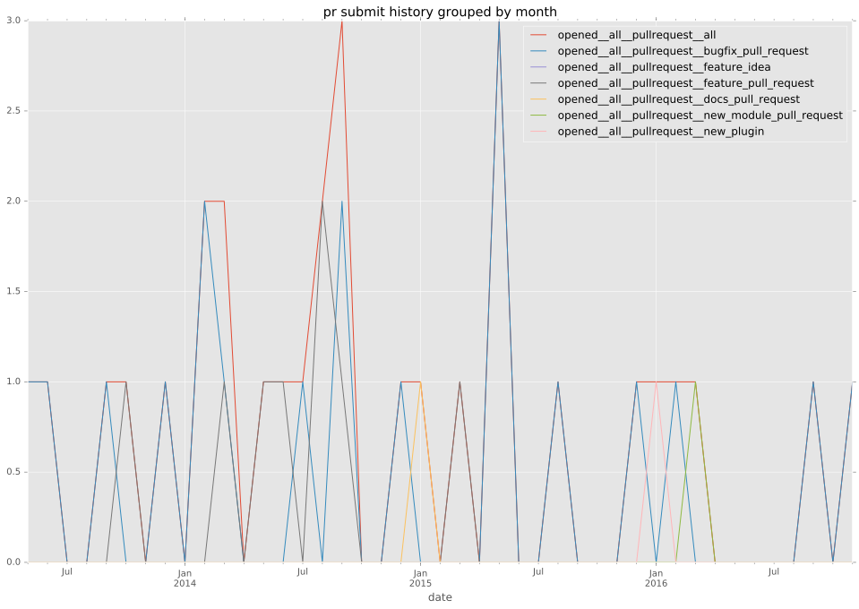
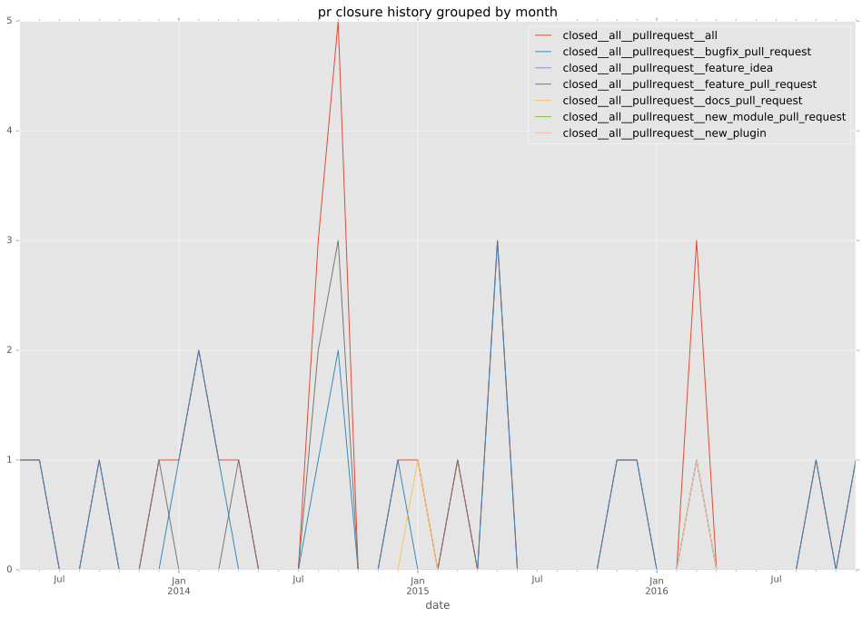

authors
- bennojoy
maintainers
- DEPRECATED
contributors
- mpdehaan : 21 commits
- bcrochet : 27 commits
- abadger : 5 commits
- jpmens : 2 commits
- Hypermanzer : 8 commits
- jctanner : 1 commits
- Shrews : 1 commits
- emonty : 3 commits
total issue counts
feature pull request: 9
bugfix pull request: 19
pullrequest: 28
issue: 1
bug report: 1
issue history
pullrequest history


days open by issue type
bugfix pull request
count: 28
std: 28.8760120874
min: 0
max: 150
median: 0.0
mean: 7.75
all
count: 41
std: 34.1686098991
min: 0
max: 150
median: 0.0
mean: 13.3902439024
pullrequest
count: 0
std: nan
min: nan
max: nan
median: nan
mean: nan
feature pull request
count: 12
std: 43.3491812512
min: 0
max: 147
median: 8.5
mean: 27.6666666667
issue
count: 0
std: nan
min: nan
max: nan
median: nan
mean: nan
bug report
count: 1
std: nan
min: 0
max: 0
median: 0.0
mean: 0.0
closures grouped by total days open